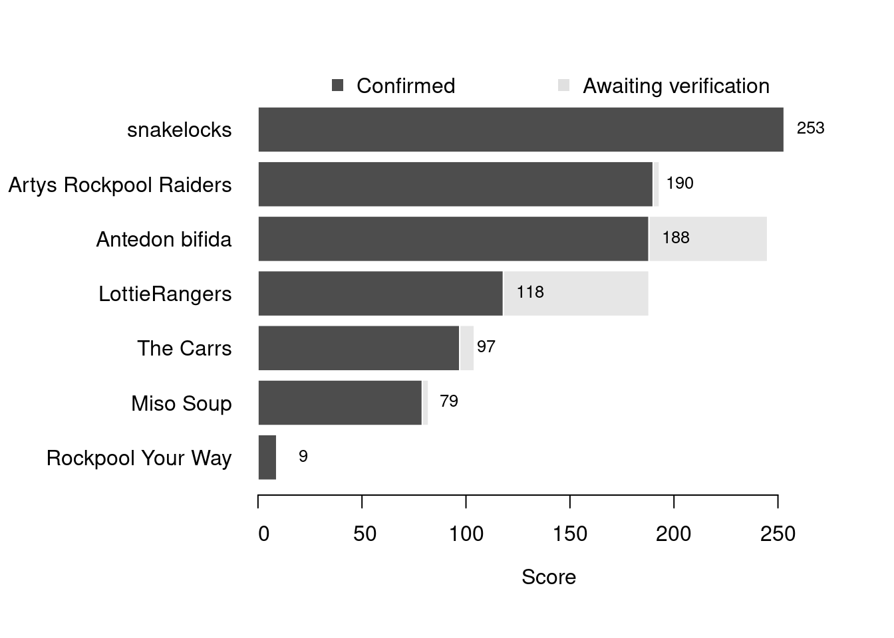

Content
You can view all the wildlife recorded at this event on iNaturalist.


| Records | 134 |
| Species | 40 |
| Verified species | 37 |
| Observers | 8 |
| Potential score | 744 |
| Confirmed score | 648 |
| Top verified species | Lysidice ninetta |
| Top species rarity score | 75 |
| Registered participants | 20 |
| Children attending | 9 |
Congratulations to snakelocks for taking the gold medal in this BioBlitz Battle! And well done to everyone for a great game and some fantastic wildlife finds.
| Team | Records | Potential Score | Confirmed Score |
|---|---|---|---|
| snakelocks | 46 | 227 | 253 |
| Artys Rockpool Raiders | 33 | 193 | 190 |
| Antedon bifida | 6 | 245 | 188 |
| LottieRangers | 18 | 188 | 118 |
| The Carrs | 12 | 104 | 97 |
| Miso Soup | 7 | 82 | 79 |
| Rockpool Your Way | 1 | 9 | 9 |

| Participant | Records | Potential Score | Confirmed Score |
|---|---|---|---|
| lowenna_davey | 46 | 227 | 253 |
| nwalkden | 33 | 193 | 190 |
| David Lyu | 6 | 245 | 188 |
| seang1977 | 18 | 188 | 118 |
| isobelac | 12 | 104 | 97 |
| grh2nd | 7 | 82 | 79 |
| jfishwick | 1 | 9 | 9 |
A total of 5 species have a verified rarity score of 32 or higher.


Community verified records only
Click any image to view the taxon on iNaturalist.
| Name | Rarity Score | |
|---|---|---|

|
Lysidice ninetta | 75 |

|
Plagioecia patina | 56 |

|
Eupolymnia | 43 |

|
Hooded Shrimp - Athanas nitescens | 33 |

|
Gracile Sea Spider - Nymphon gracile | 32 |

|
Bootlace Worm - Lineus longissimus | 28 |

|
Rosy Feather Star - Antedon bifida | 25 |

|
Devil’s Tongue Weed - Grateloupia turuturu | 25 |

|
Risso’s Crab - Xantho pilipes | 19 |

|
Black Squat Lobster - Galathea squamifera | 18 |

|
Common Tower Shell - Turritellinella tricarinata | 18 |

|
encrusting coralline algae - Lithophyllum | 16 |

|
Long-clawed Porcelain Crab - Pisidia longicornis | 16 |

|
Puff-ball Algae - Colpomenia | 15 |

|
Great Scallop - Pecten maximus | 14 |

|
Dwarf Brittle Star - Amphipholis squamata | 13 |

|
Worm Pipefish - Nerophis lumbriciformis | 13 |

|
Furbelows - Saccorhiza polyschides | 13 |

|
Netted Dogwhelk - Tritia reticulata | 13 |

|
Aplysia | 12 |

|
crumb-of-bread sponge - Hymeniacidon perlevis | 12 |

|
Thongweed - Himanthalia elongata | 11 |

|
Strawberry Anemone - Actinia fragacea | 10 |

|
Grey Mail-shell - Lepidochitona cinerea | 10 |

|
Hairy Porcelain Crab - Porcellana platycheles | 10 |

|
Amphipods - Amphipoda | 9 |

|
Velvet Swimming Crab - Necora puber | 9 |

|
Common Hermit Crab - Pagurus bernhardus | 9 |

|
Glass Shrimps - Palaemon | 9 |

|
Montagu’s Crab - Xantho hydrophilus | 9 |

|
snakelocks anemone - Anemonia viridis | 8 |

|
Edible Crab - Cancer pagurus | 8 |

|
Saw Wrack - Fucus serratus | 8 |

|
bladder wrack - Fucus vesiculosus | 8 |

|
Atlantic Dogwhelk - Nucella lapillus | 8 |

|
European Green Crab - Carcinus maenas | 7 |

|
Top Snails - Trochidae | 6 |